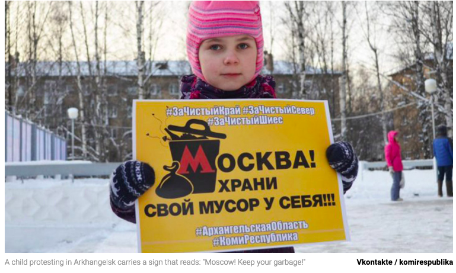

March 31, 2019
“Russia Is Not A Dump”

On our recent trip to Nairobi, Kenya planting trees for Finley you couldn’t help but notice there was trash everywhere—lining the fields and eaten by wandering goats and cows, clogging the city’s run-off, collecting downstream. It was as if this developing county just didn’t know what to do with all the packaging that came with stepping into the modern world. But rather than feel superior, consider we may be just getting a good look at what we, as developed countries, have learned to put out of sight.
This post is written by one of Finley’s best friends in middle and high school, Sarah. Sarah graduated from university in 2018, and is now living in Washington, DC.
Two years ago, I wrote my blog post on the lack of recycling in Russia while I was studying in St. Petersburg. Now it seems that change is happening, or at least a change in attitude about the possible consequences of environmental issues. In 2018, protests began in Russia in response to health issues in towns with nearby landfills. In Volokolamsk, a town near Moscow, residents held a series of protests demanding the closure of the Yadrovo landfill (https://www.nytimes.com/2018/04/05/world/europe/russia-landfills-gases.html). The town’s hospital was treating large numbers of children for respiratory issues, dizziness, and nausea, caused by toxic fumes from Yadrovo. Several other towns and regions have also launched protests in response to current landfills or plans for future landfills.
Russia currently recycles only 4% of its waste- compared to 34.6% in the U.S. and 56.1% in Germany (https://www.rferl.org/a/what-a-waste/29711205.html). The 96% of non-recycled waste ends up in landfills, and the sheer amount of trash coming from cities has caused the establishment of landfills on the outskirts of city areas. The Russian government has made moves to show that they are addressing the problem, but there is little substance behind them.* On February 3rd, protestors in around 30 different regions participated in demonstrations titled “Russia is not a dump.” (https://www.rferl.org/a/thousands-participate-in-russia-is-not-a-dump-nationwide-protests/29748950.html)
This display of a growing anger at a lack of recognition or solving of environmentally related issues shows the ability of such problems to inspire change. People in these landfill-adjacent towns in Russia are experiencing a reality that is also true of climate change: the most vulnerable are the first to suffer.
*Following the landfill protests of 2018, President Putin announced a national garbage reform which took effect on January 1st of this year. Regions are now in charge of choosing operators to collect waste, which opponents say will cost more and achieve nothing. The government has made no immediate changes to sending Moscow’s trash to nearby towns, and to more distant regions, which has continued to cause anger. On January 14th, Putin signed an order for the creation of a national system of waste disposal, but the only information provided on this system was that it would be created before the end of 2019 (https://www.rferl.org/a/putin-municipal-waste-collection-agency/29710378.html). . The government had passed a bill on waste management and recycling in 2014, but it has simply been ignored by the people who passed it (https://www.themoscowtimes.com/2018/12/12/how-russias-attempt-to-solve-its-trash-crisis-is-backfiring-a63795).